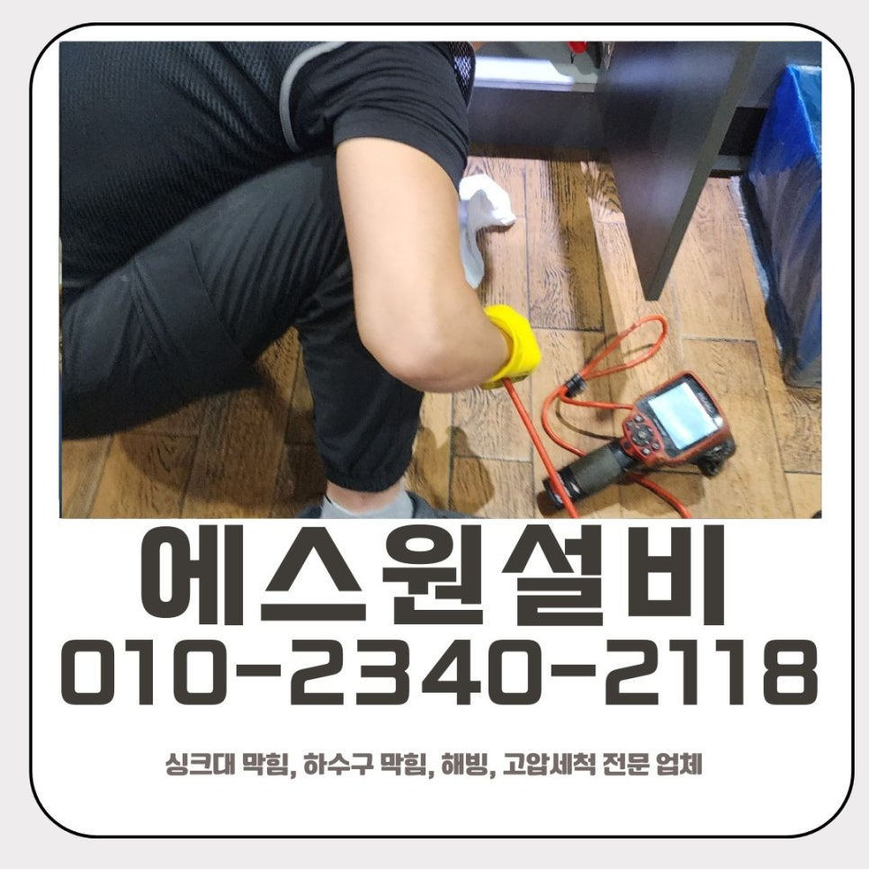
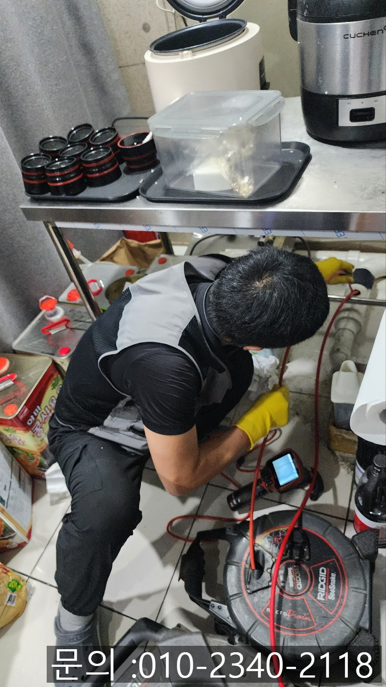
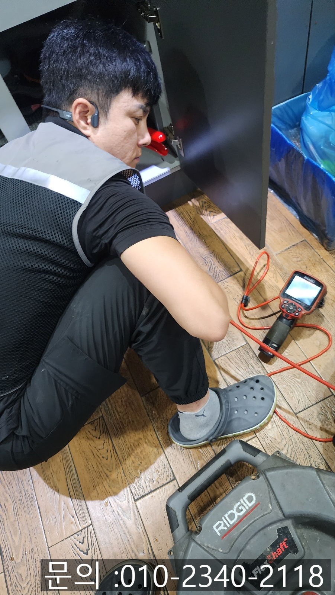
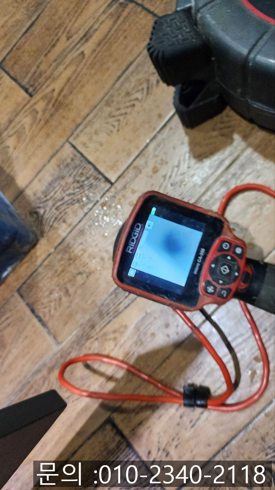
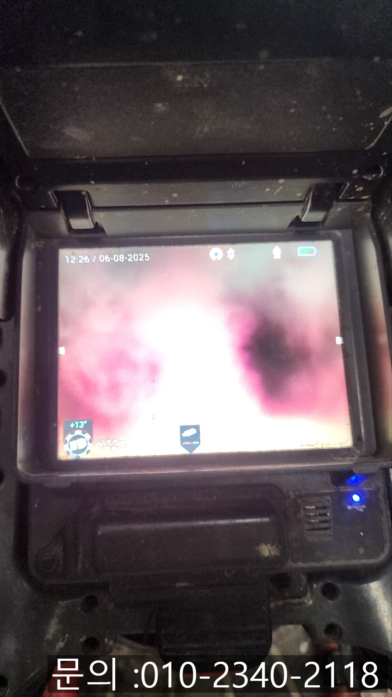
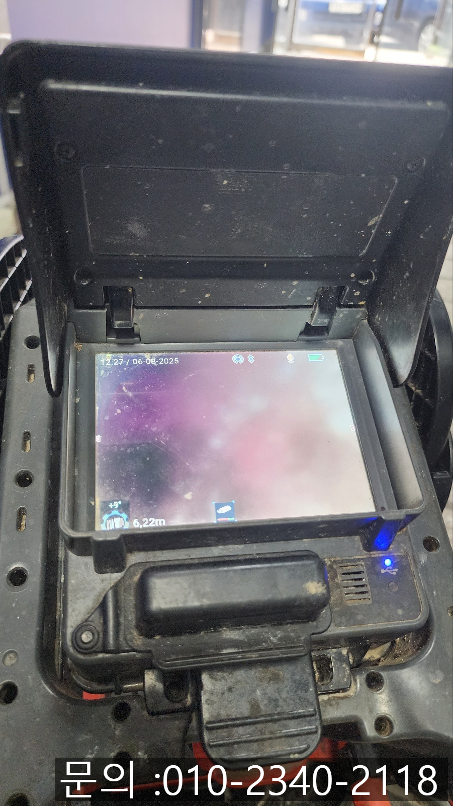
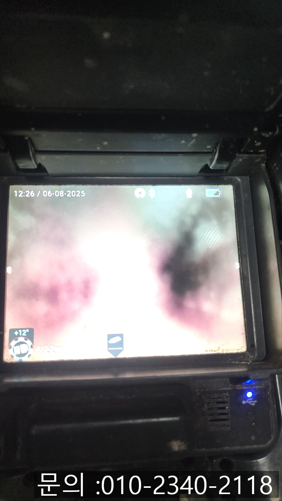

🏠 인계동 싱크대 막힘 수원 매교동 하수구 역류 뚫는 전문 업체
수원 싱크대막힘 전문 시공 후기

📋 작업 개요
- 위치: 수원
- 서비스 유형: 싱크대막힘, 하수구막힘, 배관막힘, 누수수리, 역류해결, 뚫는업체, 배관청소, 악취차단
- 작업 일시: 2025. 8. 7. 13:40
- 업체명: 하수구수사대 (010-5615-2118)
🔍 문제 상황
안녕하세요.
수원 매교동 하수구 역류 뚫는 전문 업체 에스원 설비 입니다.
요즘 PC방, 어떤 모습인지 아시나요?
혹시 최근에 PC방 방문해보신 적 있으신가요? 예전처럼 단순히 게임만 즐기는 공간이 아닌, 이제는 맛있는 음식과 카페 못지않은 음료까지 함께 즐길수 있는 공간으로 변화하고 있는데요.

🔎 원인 분석
💡 전문가 진단: 수원 매교동 하수구 역류 뚫는 전문 업체
TV나 유튜브에서도 "맛집PC방"이라는 제목으로 소개되는 장면들을 한 번쯤은 보셨을 거예요. 실제로 요즘 PC방을 방문해보면, 분식류, 라면, 덮밥, 심지어 튀김까지 직접 조리해서 제공하는 곳도 많아졌습니다. 이런 벼화 덕분에 다양한 연령층이 즐겁게 찾을 수 있는 공간이 되었지만, 한편으로는 배관이 막히는 문제도 함께 늘어나고 있습니다.
건물 2층에 위치한PC방 점주님께서 "싱크대에서 물이 잘 안내려가고 역류하는것같다"고 연락을 주셨어요. 특히 요즘처럼 더운 여름철에는 역류된 물에서 악취가 올라오기도 하고, 위생상으로도 큰 문제가 될 수 있어 영업에 직접적인 영향을 줄 수 있는 상황이었어요. 그래서 더 늦게 전에 고객님과 약속 시간을 잡고 인계동 싱크대 막힘현장으로 신속하게 출동하게 되었어요.
수원 매교동 하수구 역류 뚫는 전문 업체
현장 도착 후 확인해보니 싱크대가 P트랩 구조였어요. 일반적인 구조보다 더 복잡하고, 청소 작업이 어려운 단점이 있어요.

🔧 작업 과정
인계동 싱크대 막힘 원인 파악을 위해 내시경 카메라를진입시켜 내부를 확인해보았습니다. 점검 결과 기름슬러지와 음식물 찌꺼기가 잔뜩 쌓여있었어요. 요즘 PC방은 단순히 컵라면이나 간편식뿐아니라 튀김기나 조리기구를 이용한 간단한 음식 조리까지 함께 하다보니 기름과 음식물 찌꺼기가 상당히 많으 흘러들어가게 되었던 것으로 보였어요.
P트랩 구조의 배관이었기 때문에 1층에서 천장을 열어 청소 작업을 진행해야만 했어요. 천장을 열기 위해 사다리를 이용한 작업이필요했고, 이런 작업을 진행할 때 에스원 설비는 무엇보다 안전을 최우선으로 고려합니다. 주변 손님들이 불편을 느끼시지 않도록 최대한 안전 조치를 철저히 하고 진행하였어요.
천장을 조심스럽게 열고, 그 안에 설치되어있는 배관을 타공하여 배관 청소 전문 장비인 플렉스 샤프트 장비를 진입시켜 청소 작업을 시작하였습니다.
샤프트 장비는 드릴을 연결하여 작동시키는 장비로 노즐 끝에 달린 갈퀴모양의 체인이 돌아가면서 강한 회전력으로 배관을 막고 있는 기름슬러지들을 잘게 부숴주면서 제거하게 됩니다.
모든 슬러지를 깨끗하게 제거하고 나니 물이 쏴~~ 하면서 잘 빠지는 것을 확인할 수 있었어요. 배관 내시경을 통해 깨끗해진 내부를 점검하는 것도 잊지 않았지요.
타공했던 부분은 방수 테이프로 단단히 밀착하여 시공하면서 누수 우려를 차단하고 깔끔하게 마무리해주었어요. 배관도 천장도 다시 원래 상태처럼 복구를 완료하였어요.배관을 뚫고 청소하는 것뿐만 아니라, 마무리 작업까지도 처음과 끝을 책임감있게 처리하는 것이 중요하다고 생각하는 에스원 설비입니다.


✅ 작업 완료
PC방처럼 음식 조리를 하는 매장에서는 배관이 일반 가정집보다 더 빨리 오염될 수 있어요. 미리미리 관리하지 않으면 막힘이나 역류로 인해 영업에 지장을 받을 수 있습니다. 하수구나 배관에 이상함을 느끼셨다면 망설이지 말고 수원 매교동 하수구 역류 뚫는 전문 업체 전문가의 점검을 받아보시길 추천드릴게요. 에스원 설비는 어디든, 언제나 신속하고 안전하게 찾아가 해결해드리겠습니다.
경기도 수원시 팔달구 효원로249번길 46-15 5층 71호




⚠️ 베란다 누수 및 방수 관리 방법
- ✅ 비가 많이 올 때 창틀 주변이나 아래층 천장에 얼룩이 생기는지 정기적으로 확인해 보세요.
- ✅ 우수관 주변 실리콘 마감이 들뜨거나 깨진 틈새가 있는지 손상 여부를 수시로 체크하세요.
- ✅ 베란다 바닥 타일의 줄눈(메지)이 소실되면 그 틈으로 물이 침투하여 누수가 유발됩니다.
- ✅ 누수 의심 증상 발견 시 방치하면 아래층 손실이 커지므로 즉시 전문가의 진단을 받으십시오.
💡 핵심 정리
- 확실한 장비 작업(내시경 점검 및 샤프트 스케일링)으로 원인을 뿌리 뽑습니다.
- 작업 후 1년 이내에 동일한 부위 재발 시 100% 무상 A/S 서비스를 보장합니다.
- 서울 · 경기 · 인천 전 지역에 24시간 언제든 긴급 출동할 수 있도록 항시 대기 중입니다.
❓ 자주 묻는 질문 (FAQ)
🚨 수원 싱크대막힘 문제로 고민이신가요?
정확한 원인 진단과 확실한 시공으로 재발 없는 해결을 약속드립니다.
24시간 긴급 출동 | 서울 · 경기 · 인천 전지역 | 1년 내 재발 시 무상 A/S